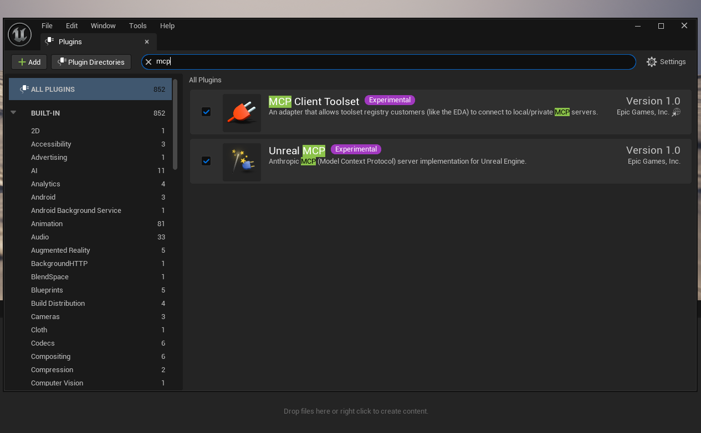
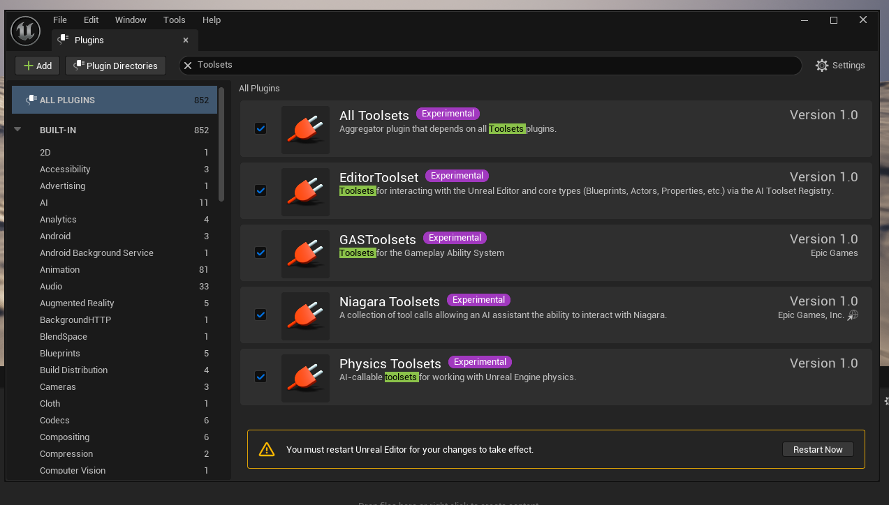
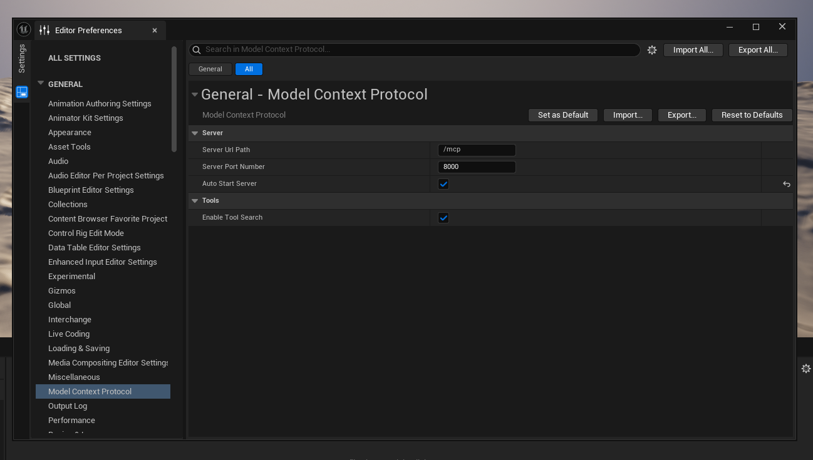
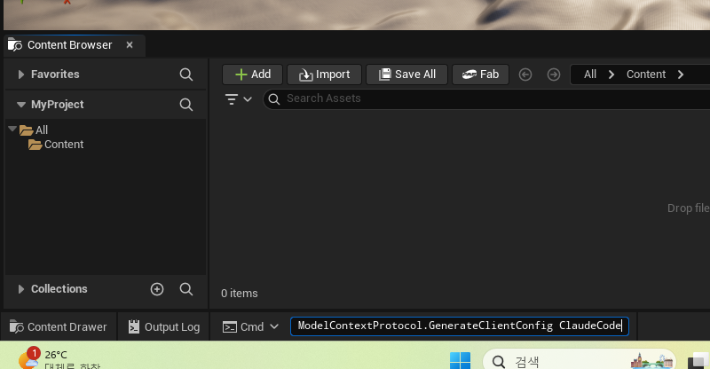
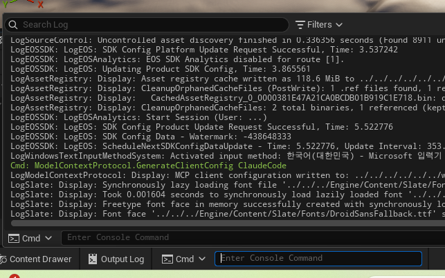

00 동작 원리
- MCP 서버가 에디터 프로세스 "안"에서 돈다. 에디터가 켜져 있어야 Claude가 붙는다.
- Unreal MCP 단독으로는 Tool이 없다.
All Toolsets를 켜야 실제 조작 Tool이 등록된다. - 전송은 HTTP 전용 (stdio·WebSocket 미지원). 기본
127.0.0.1:8000, 경로/mcp. - Tool은 게임 스레드에서 순차 실행 → 동시 호출이 겹치지 않게.
01 사전 준비
| 항목 | 확인 |
|---|---|
| UE 5.8 설치 | Epic Games Launcher / GitHub 빌드 (2026-06-17 릴리스) |
| 프로젝트 엔진 버전 | MyProject.uproject → "EngineAssociation": "5.8" ✅ |
| Claude Code CLI | 터미널에서 claude --version 동작 확인 |
| 모델 | 복잡한 Blueprint 조작은 tool-calling 강한 모델 권장 (Opus/Sonnet) |
02 플러그인 활성화 (에디터)
2-1. MCP 플러그인 켜기
Edit > Plugins 에서 "mcp" 검색 → Experimental 두 개:
| 플러그인 | 역할 | 필요? |
|---|---|---|
| Unreal MCP | 에디터 안에서 도는 MCP 서버 본체 (Claude가 붙는 대상). Toolset Registry를 자동 동반. | ✅ 필수 |
| MCP Client Toolset | 에디터가 외부 MCP 서버에 붙는 클라이언트 어댑터 — 방향이 반대. | ⛔ 불필요(켜도 무해) |

2-2. Toolset 켜기 (필수 — 빼먹으면 Tool 0개)
같은 창에서 "Toolsets" 검색 → All Toolsets 하나만 체크하면 됩니다.
| 플러그인 | 설명 |
|---|---|
| All Toolsets ✅ | 모든 Toolset에 의존하는 aggregator. 이것만 켜면 아래가 의존성으로 함께 켜진다. |
| EditorToolset | 에디터·블루프린트·액터·프로퍼티 조작 (거의 모든 작업의 핵심 — 사실상 이것만 있으면 충분) |
| GAS / Niagara / Physics Toolsets | 각각 어빌리티·파티클·물리를 AI로 직접 조작할 때만 필요 → 일반 셋업엔 굳이 필요 없음 |
체크 후 하단 Restart Now 로 재시작.

EditorToolset 하나로 충분합니다.2-3. 재시작 시 "GameFeatureData" 프롬프트가 뜨면
Asset Manager settings do not include an entry for assets of type GameFeatureData ... Add entry to PrimaryAssetTypesToScan?
에러가 아니라 정상 안내입니다. All Toolsets에 포함된 GASToolsets 가 Game Features 에 의존해서 뜨며, "예/Add" 를 누르면 DefaultGame.ini 에 항목이 자동 추가됩니다. (피하려면 All Toolsets 대신 EditorToolset 만 켜면 됩니다.)
03 MCP 서버 설정
Edit > Editor Preferences > General > Model Context Protocol:
| 구분 | 항목 | 값 | 비고 |
|---|---|---|---|
| Server | Server Url Path | /mcp | 기본값 |
| Server Port Number | 8000 | 기본값 | |
| Auto Start Server | ✅ 체크 | 기본은 꺼짐 — 직접 켤 것 | |
| Tools | Enable Tool Search | ✅ 체크 | 기본값(켜짐) |
최종 엔드포인트: http://127.0.0.1:8000/mcp

04 클라이언트 설정 파일 생성 (.mcp.json)
에디터 콘솔 열기 — 백틱(`) → 실행:
ModelContextProtocol.GenerateClientConfig ClaudeCode

ModelContextProtocol.GenerateClientConfig ClaudeCode 입력.실행하면 Output Log에 설정 파일 작성 성공 메시지가 뜹니다:

LogModelContextProtocol: Display: MCP client configuration written to: … = .mcp.json 생성 완료.프로젝트 루트(C:\works\ue_prjs\MyProject\.mcp.json)에 다음이 생성됩니다:
{
"mcpServers": {
"unreal-mcp": {
"type": "http",
"url": "http://127.0.0.1:8000/mcp"
}
}
}여러 클라이언트 한 번에: ModelContextProtocol.GenerateClientConfig All (지원: ClaudeCode·Cursor·VSCode·Gemini·Codex·All)
05 Claude Code 연결
.mcp.json 은 프로젝트 스코프라, Claude Code를 그 파일이 있는 폴더(=MyProject)에서 실행해야만 unreal-mcp 가 잡힙니다. 다른 폴더에서 띄우면 /mcp 에 안 보입니다.방법 A — 폴더에서 실행 (권장)
cd C:\works\ue_prjs\MyProject claude
- VSCode라면
File ▸ Open Folder로 MyProject 폴더를 열고 그 워크스페이스에서 Claude Code를 시작. - 신뢰(approve) 프롬프트 승인 →
/mcp에unreal-mcp ✓ connected확인.
방법 B — CLI 등록
claude mcp add --transport http unreal-mcp http://127.0.0.1:8000/mcp
claude mcp add 는 설정에 영구 등록되지만, 이미 실행 중인 세션에는 즉시 반영되지 않습니다. 등록 후 claude를 새로 시작해야 도구가 네이티브로 로드됩니다.06 연결 검증 (자가 진단)
Claude Code로 붙기 전/후, 서버가 살아있는지 직접 확인할 수 있습니다.
6-1. 서버가 8000 포트에 떠 있나
Get-NetTCPConnection -LocalPort 8000 -State Listen
→ OwningProcess 가 UnrealEditor 면 정상. (없으면 Auto Start 미설정 또는 ModelContextProtocol.StartServer 필요)
6-2. MCP 핸드셰이크 (HTTP 200 + 세션이면 정상)
$b = '{"jsonrpc":"2.0","id":1,"method":"initialize","params":{"protocolVersion":"2025-06-18","capabilities":{},"clientInfo":{"name":"probe","version":"1"}}}'
Invoke-WebRequest http://127.0.0.1:8000/mcp -Method POST -Body $b `
-ContentType application/json -Headers @{Accept="application/json, text/event-stream"}응답에 StatusCode 200 과 Mcp-Session-Id 헤더, 그리고 "protocolVersion":"2025-06-18" 가 보이면 서버가 MCP로 정상 통신하는 것입니다. (GET으로 찌르면 405 가 정상 — MCP는 POST/JSON-RPC를 씁니다.)
6-3. Claude Code에서
/mcp # unreal-mcp ✓ connected 확인 > 어떤 toolset을 쓸 수 있어? # list_toolsets 결과 확인
list_toolsets / describe_toolset / call_tool 3개의 게이트웨이로 노출됩니다(컨텍스트 절약). 실제 도구는 list_toolsets → describe_toolset 으로 펼쳐 보면 EditorToolset·GAS·Niagara·Physics·UMG·Sequencer 등 수십 개가 등록돼 있습니다.07 첫 실습 · 조명 스폰
연결되면 자연어 한 줄로 에디터를 조작합니다. 빈 레벨을 띄운 상태에서:
> 지금 레벨에 DirectionalLight, SkyLight, PointLight 하나씩 추가해줘
내부적으로 SceneTools.add_to_scene_from_class 가 호출되어, 다음 액터가 현재 레벨의 PersistentLevel에 실제로 생성됩니다:
| 이름 | 클래스 | 생성 결과(refPath 예) |
|---|---|---|
| ☀️ Sun | /Script/Engine.DirectionalLight | …PersistentLevel.DirectionalLight_… |
| 🌥️ SkyLight | /Script/Engine.SkyLight | …PersistentLevel.SkyLight_… |
| 💡 KeyLight | /Script/Engine.PointLight | …PersistentLevel.PointLight_… |
세 호출 모두 returnValue.refPath 를 돌려주면 성공입니다. 에디터 Outliner / 뷰포트에서 바로 확인됩니다.
/Temp/Untitled_1)을 새 이름으로 저장하려면 AssetTools.duplicate 로 /Game/Maps/lv01 에 복제 후 save_assets → load_level 순으로 처리합니다. (전용 "save level as" 도구는 아직 toolset에 없음)08 콘솔 명령 레퍼런스
| 명령 | 용도 |
|---|---|
ModelContextProtocol.StartServer [port] | 서버 수동 시작 |
ModelContextProtocol.StopServer | 서버 중지 |
ModelContextProtocol.RefreshTools | 커스텀 Toolset 작성 후 Tool 재등록 |
ModelContextProtocol.GenerateClientConfig <Client> | 클라이언트 설정 생성 |
09 트러블슈팅
| 증상 | 원인 / 해결 |
|---|---|
/mcp 에 unreal-mcp 안 보임 | Claude Code를 MyProject 폴더(.mcp.json 위치)에서 실행했는지 확인. VSCode면 그 폴더를 Open Folder. 다른 폴더에서 띄우면 안 잡힘. |
claude mcp add 했는데 이 세션에 안 뜸 | 실행 중 세션엔 즉시 반영 안 됨 → claude 새로 시작. |
| Claude에 Tool이 하나도 안 보임 | Toolset 미활성 → 2-2 확인(All Toolsets). 작성 후 RefreshTools |
Connection closed / 연결 실패 | ① 에디터가 켜져 있고 서버가 떠 있는지(06-1) ② .mcp.json 있는 폴더에서 실행했는지 |
재시작 시 GameFeatureData … Add entry? | 정상 프롬프트. "Add" 선택. 피하려면 EditorToolset만 켤 것. |
| 포트 충돌 | Editor Preferences에서 포트 변경 후 GenerateClientConfig 재실행 |
| 복잡한 Blueprint 작업 실패 | tool-calling 약한 모델 → Opus/Sonnet 사용 |
10 출처 (2026-06 기준)
- Unreal MCP in Unreal Editor — UE 5.8 공식 문서 (Epic)
- MCP Client Toolset — UE 5.8 Plugin Index (Epic)
- UE 5.8 AI: Claude, Codex, MCP Editor Guide 2026 — explainx.ai
- Unreal Engine 5.8 Adds Claude and Gemini AI to Editor — techmymoney
- UE5.8 MCP Server Setup & Test (YouTube)
- Epic Dev Community 포럼 — "Connection Closed" 이슈